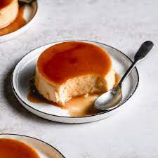

Flan

This is a complete guide on how to make flan. Please follow the directions below
- 1 cup white sugar
- 3 eggs
- 1 (14 ounce) can sweetened condensed
- 1 tablespoon vanilla extract
- Preheat oven to 350 degrees
- In a medium sauce pan melt sugar until golden
- In a large bowl, beat eggs. Beat in condensed milk, evaporated milk.
- Bake in preheated oven 60 minutes.Let cool completely.
- To serve carefully invert on serving plate with edges